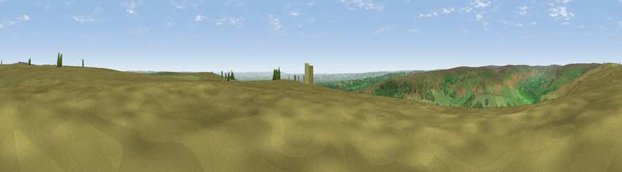

Viewpoint near Rosedale Abbey
#10712 in England · top 28% of its area beats it · near Rosedale AbbeyThe view, rendered

A 360° render of this exact spot computed from the terrain model, tree cover and land cover — summer colours, afternoon light, calibrated against photographs of famous viewpoints. Real trees, hedges and buildings will differ in detail.
The panorama
Grey silhouette: terrain skyline in each direction (720 bearings, Earth curvature and refraction included). Dashed green: skyline with trees (+15 m) and buildings (+8 m) as obstacles. Blue strip: how far the ground is visible on each bearing.
Where the view opens
Wedge length = distance to the farthest visible ground on that bearing (vegetation-aware). Rings at 10, 25 and 50 km.
What fills the view
82% grassland · 10% woodland · 7% cropland
Angular shares of the visible panorama (visual magnitude), not map area. Landscape diversity 0.26 (0–1 Shannon).
Key numbers
More beautiful places nearby
The staircase of upgrades: each row has a higher view potential than everything closer. Driving times are estimates from straight-line distance, calibrated against real road routing — check an actual route before setting out.
| Place | Direction | Drive | Score |
|---|---|---|---|
| Viewpoint near Gillamoor | WSW · 3 km | ~8 min | 66.6 |
| Viewpoint c9909_9299 | W · 4 km | ~9 min | 67.8 |
| Viewpoint near Gillamoor | SSW · 5 km | ~12 min | 72.8 |
| Viewpoint near Ingleby Greenhow | NW · 11 km | ~21 min | 75.6 |
| Viewpoint near Ingleby Greenhow | NW · 13 km | ~24 min | 76.0 |
| White Hill | NW · 15 km | ~26 min | 84.2 |
| Viewpoint near Great Broughton | WNW · 15 km | ~27 min | 84.4 |
| Viewpoint near Kirkby | WNW · 17 km | ~30 min | 84.9 |
54.35151, -0.94107 · source: screening · position refined by local search. Computed location — check access rights before visiting.